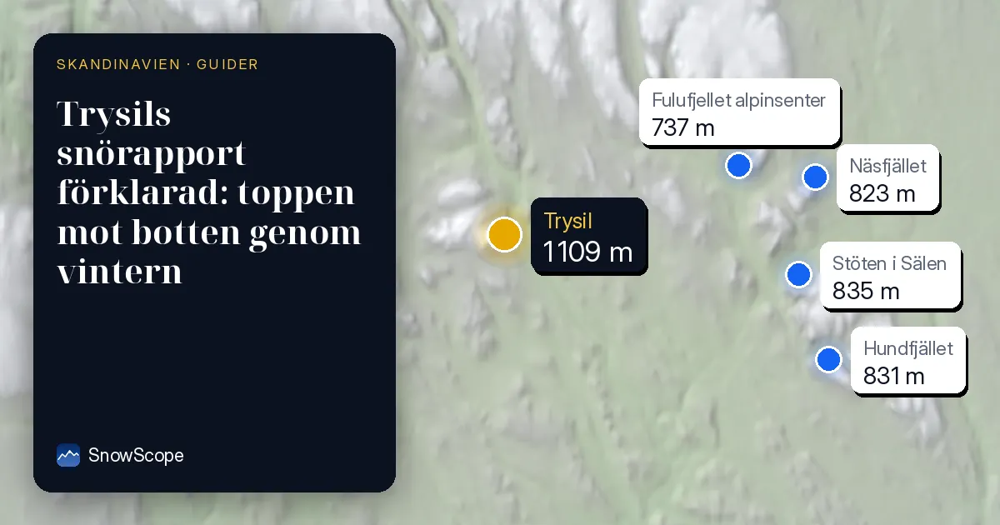

Trysils snörapport förklarad: toppen mot botten genom vintern
Trysil är Norges största skidort räknat i kartlagda nedfarter, 101 km på 40 liftar runt det rundade Trysilfjellet, från 407 m nederst till 1109 m på toppen. Snörapporten har alltid två djup, och skillnaden mellan dem är nyckeln till att läsa den. Här är vad de två siffrorna brukar vara, månad för månad, ur vår historik över 46 tidigare vintrar.
Se snöprognosen för Trysil live i SnowScope-appenSnödjup, pudervarningar och 3D-kartan, gratis.

Två siffror, ett berg
Botten och toppen skiljs åt av 702 höjdmeter, och i ett skandinaviskt klimat räcker det för en verklig skillnad. En vanlig vinter är toppdjupet 80 cm nederst, 103 cm mitt på berget (758 m) och 130 cm på toppen. När rapporten säger att botten är tunn är övre halvan oftast fin.
November och december: toppen leder
Första snön når mitt på berget senast 20 oktober i hälften av vintrarna. November är tunn överallt: 7 cm nederst, 17 cm mitt på och 26 cm på toppen ett vanligt år.
December öppnar gapet: 28 cm nere, 44 cm mitt på och 60 cm uppe. Kall inlandsluft gör att det som faller ligger kvar, och snökanonerna fyller de nedre backarna.
Januari till mars: hela berget
I januari har botten 52 cm, mitten 68 cm och toppen 88 cm. Februari och mars är de djupa månaderna: 80 och 85 cm mitt på, 99 och 107 cm på toppen.
Bästa veckan mitt på berget är vecka 9, i slutet av februari, då alla tidigare vintrar (100 procent) hade minst 50 cm där. Mitt på berget ligger 50 cm eller mer i 12 veckor nio vintrar av tio; toppen klarar 15 veckor.
April: åk toppen, gå botten
I april har botten vanligtvis 42 cm kvar och toppen 111 cm. Påskveckorna handlar om toppen av berget.
Månad för månad på tre höjder
I december har en vanlig vinter 28 cm nederst (407 m), 44 cm mitt på berget (758 m) och 60 cm på toppen (1109 m). I januari har en vanlig vinter 52 cm nederst (407 m), 68 cm mitt på berget (758 m) och 88 cm på toppen (1109 m). I februari har en vanlig vinter 65 cm nederst (407 m), 80 cm mitt på berget (758 m) och 99 cm på toppen (1109 m).
I mars har en vanlig vinter 66 cm nederst (407 m), 85 cm mitt på berget (758 m) och 107 cm på toppen (1109 m). I april har en vanlig vinter 42 cm nederst (407 m), 78 cm mitt på berget (758 m) och 111 cm på toppen (1109 m).
En dålig vinter och en bra vinter
Spridningen betyder lika mycket som mitten. Mitt på berget hade nio av tio tidigare mars-månader minst 63 cm och en av tio 115 cm eller mer; på toppen går samma spridning från 76 till 137 cm.
Över hela vintern gick maxdjupet mitt på berget från 54 cm den sämsta vintern till 146 cm den bästa, kring vanliga 103 cm; på toppen från 58 till 194 cm kring 130 cm. Snö täckte marken mitt på berget i 200 dagar en vanlig vinter, och första snön lade sig där senast 20 oktober hälften av vintrarna.
Trend över 46 vintrar
Toppens vintermax gick från 145 cm under de första 15 vintrarna till 135 cm under de senaste 15. Botten gick från 92 till 78 cm. Berget levererar fortfarande, med lite mindre nederst; förra vintern toppade mitten på 93 cm.
Tips för skidåkare
- Läs toppsiffran för åkningen, bottensiffran för vägen hem.
- Februari och början av mars ger djupast snö på alla höjder.
- Våra djup är en områdesuppskattning från tidigare vintrar, inte anläggningens egen mätning; öppna liftar finns på den officiella sidan.
- Från Sverige är Trysil nära gränsen, och snön följer samma mönster som på den svenska sidan.
Referenser och källor
- Wikipedia, 'Trysil', hämtad 22 November 2026. sv.wikipedia.org/wiki/Trysil
Om siffrorna
Liftar, backar och resväg: källorna nedan, kontrollerade på angivet datum.
Officiella lavinprognoser: Varsom (NVE)
Citera den här rapporten
För forskning, undervisning eller press: siffrorna och diagrammen får återanvändas fritt under CC BY 4.0 med den här källhänvisningen.
SnowScope (2026), Trysils snörapport förklarad: toppen mot botten genom vintern, https://snowscope.app/blog/sv/2026/11/trysil-snow-top-vs-bottom-through-the-winter.html, hämtad 2026-11-22
SnowScope (Atlas Labs). (2026, November 22). Trysils snörapport förklarad: toppen mot botten genom vintern. SnowScope snow reports. https://snowscope.app/blog/sv/2026/11/trysil-snow-top-vs-bottom-through-the-winter.html
BibTeX
@misc{snowscope2026trysilsnowtopvsbottomthr,
author = {{SnowScope (Atlas Labs)}},
title = {Trysils snörapport förklarad: toppen mot botten genom vintern},
year = {2026},
month = nov,
howpublished = {\url{https://snowscope.app/blog/sv/2026/11/trysil-snow-top-vs-bottom-through-the-winter.html}},
note = {Published 2026-11-22 11:12 UTC; accessed 2026-11-22}
}· CC BY 4.0 · Metoder, data och verktyg →
Trysil: snö och temperatur efter höjd, i vinter jämfört med förra (verktyg) →
Följ Trysil
Gratis: ett meddelande när nysnö är på väg, och prognosen varje morgon.